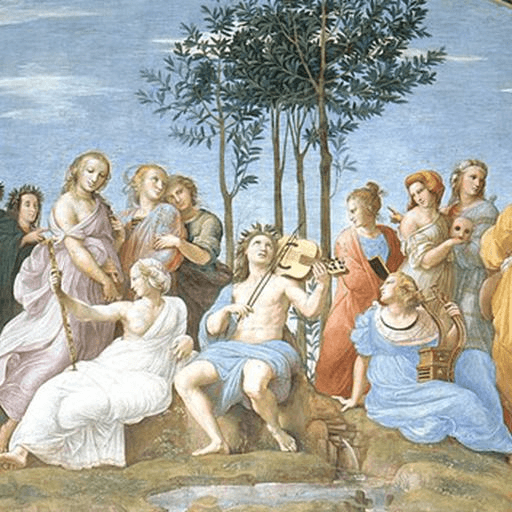

第63卦 水火既濟：抵達後的下一步
上卦：水（☵） ・ 下卦：火（☲）

核心意義
事情已經圓滿完成，目標達成、秩序建立，這是一段難得的安定時期。然而圓滿的時刻往往隱含著下一步的起點；守成比創業更需謹慎，在功成之際保持清醒，及早看見下一個變化，才能讓圓滿延續。
「我以圓融的智慧守成當下，在功成之際保持如履薄冰的清醒。」
祝福
願你在功成圓滿之時，依然保有一份謙遜與警醒，讓美好得以長久。
五大類別指引
感情
關係已走過磨合，進入穩定圓滿的階段，彼此配合默契、生活有條不紊。這是得來不易的成果；用心珍惜這份安定，持續為關係注入新鮮感，別讓圓滿變成平淡。
珍惜穩定的成果，持續注入新鮮感：
- 別讓圓滿變成平淡。
- 用心維持得來不易的默契。
事業
你的努力已經開花結果，專案完成、目標達成、局面穩定。這是值得慶賀的時刻；慶祝之餘要防範鬆懈，檢視成果中潛在的小問題，讓圓滿的狀態能夠持續。
慶祝成果，但防範鬆懈：
- 檢視潛在的小問題。
- 讓圓滿的狀態持續。
健康
身體正處於平衡穩定的狀態，各項指標良好、精力充沛。穩定是最佳的保養時機；維持目前的良好習慣，同時留意細微的變化，及早調整，讓健康的好狀態長久維持。
維持良好習慣，持續保養：
- 留意身體細微的變化。
- 及早調整，讓好狀態長久。
財運
財務已達成階段性目標，收支平衡、資產穩健，可能剛完成一筆成功的投資。這是守成的時刻；把成果鎖進安全的配置，提高警覺留意轉折訊號，為下一個階段預做準備。
把成果鎖進安全的配置：
- 提高警覺，留意轉折訊號。
- 為下一個階段預做準備。
人際
關係已進入和諧穩定的狀態，各方圓滿、合作順暢。珍惜這份得來不易的和諧；持續經營與維護，別因一切順利而疏忽了細微的裂縫，圓滿需要用心維持。
持續經營與維護和諧：
- 留意細微的裂縫，及早修補。
- 圓滿需要用心維持。